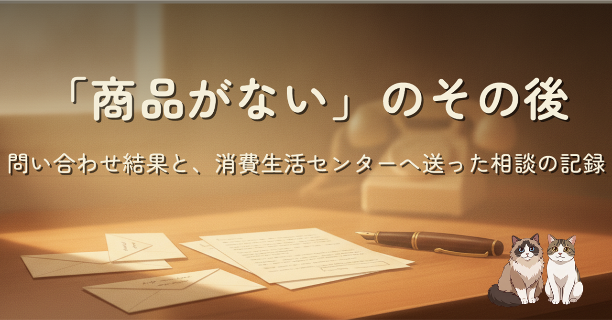
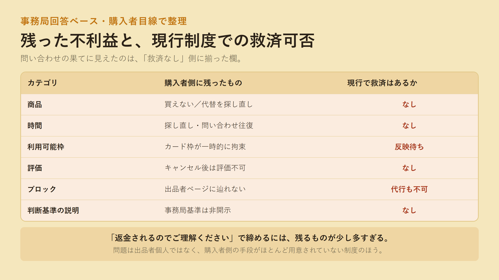
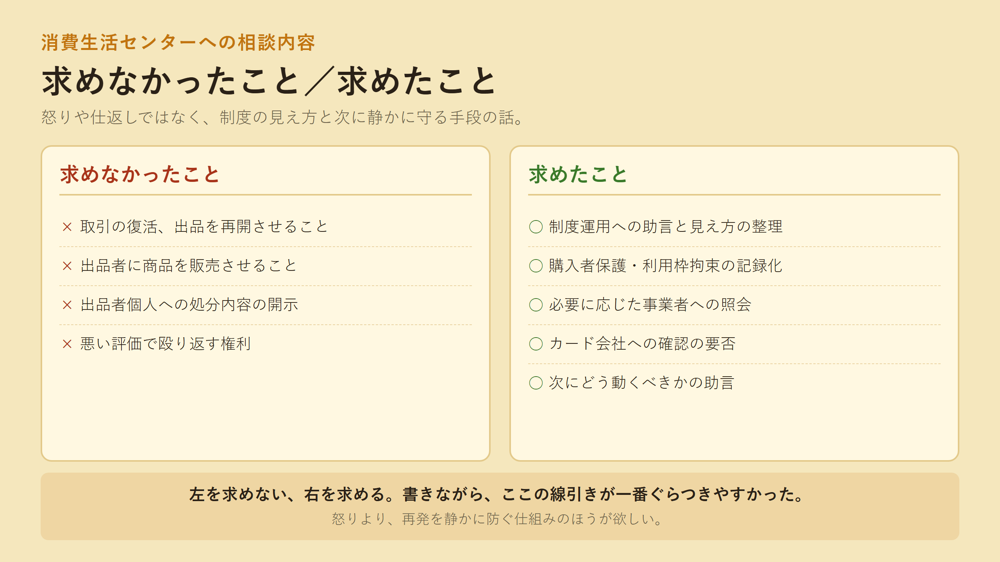

前回、メルカリで約 9.6 万円の MacBook Neo を購入したら、購入者の同意なしに「商品がない」を理由に事務局がキャンセルを成立させた、という体験を書きました。本記事はその第二弾。メルカリ事務局とのやり取りで何が分かり、何が分からないままだったか。群馬県の消費生活センターには、どんな相談内容を送ったか。買えなかった事実より、その後どう向き合うかのほうが、こちらとしてはずっと気になる部分でした。
続編なので、前提と経緯は前回をご参照ください。
問い合わせの果てに見えてきたのは、購入者側の手段がほとんど用意されていないという制度の輪郭でした。出品者ページに辿れなければブロックできない、事務局による代行ブロックもなし、キャンセル後の評価は不可、判断基準は非開示。返金されるのは確かでも、時間・利用枠・評価・ブロック・基準説明、複数のものが購入者側に残ったままになります。
そのうえで、群馬県の消費生活センターへ送った相談内容を、求めなかったこと／求めたことに分けて整理しました。怒りや仕返しではなく、制度の見え方と、次に静かに守る手段の話としてまとめています。

